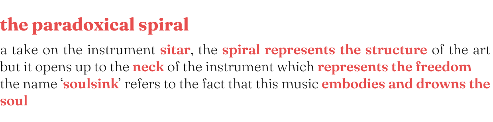
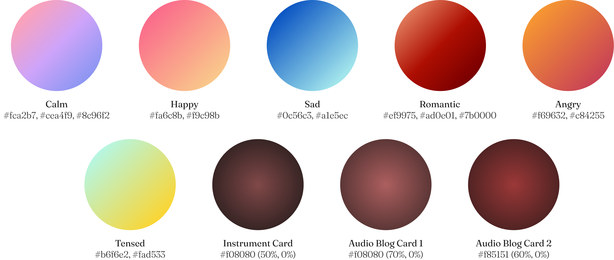

soulsink
-


overview
As a teenager, I received training in Indian Classical Music. Eventually I couldn’t devote enough time for it when I started college and therefore, lost touch. As an admirer and enthusiast of Indian Classical Music, I wanted to create a true representation of it for the digital world. There isn’t anything that exists currently which captures its essence. All of the resources either portray it to be outdated or ancient; or they rely too heavily on text to make their point. The music gets lost in the poor visuals or the verbosity.
Therefore, I decided to dedicate this project as an ode to Indian Classical Music. I want to let the music shine and have the main focus, and then reinforce that through the visuals. I want to the design to feel organic.client: Graduate Course
when: Mar-May 2022
role: Visual & Interaction Designer
process: Research, Conception, Iteration, High-Fidelity Prototype
tools: Figma-

target audience
The target audience for my design is a mix of individuals who are familiar with the music as well as those are new to it. These users are at various stages of familiarity, liking and understanding of the art form. I chose a diverse set of individuals as my target audience because I wanted my project to be versatile and provide some value to all of these users. They are best described by the words below.

background research
![Literature Review: Current websites about this music use a lot of text, making it look cluttered and dense. The visuals on these websites are also not appealing.
Cinematic References: A variety of directorial styles as well as aesthetics are used to portray the art form. The flexibility and multi-faceted nature of the music is visible across the multiple references.
Brainstorming: The existing blog-like websites end up being a one-time visit for users. But I want my version to create value for the user, keeping them engaged, interested and curious. I made use of my own knowledge about the music, tried to come up with innovative ideas to make it accessible to novices. I also looked at some sources about other forms of music and instruments to conceptualize my ideas.](../../files/soulsink/background research.png)
conception
![1. Performance Annotation: For novices, following along a concert can prove quite challenging. So, while watching the video the interface will annotate what is happening so that the user can keep up. They are little blobs that will pop up from the side in an unintrusive way.
2. Music Player: I wanted to provide a way to differentiate between the tracks and agency to choose between them. I made use of organic genres that each have a distinct feel to them, linked to the mood they invoke. The user can also hum something they like, and website will find something similar in terms of mood/notes.
3. Pitch Detector: A new user might be curious to see if they are singing in tune. They can interact with the system where they can sing the notes and the website will give them the feedback about their pitch.
4. Audio blog: Blogs are the most ubiquitous resource online about this art form but they are text-dense and verbose. I created a podcast that is augmented with visuals, minimal text, and interleaved with sounds and the music to provide context.
5. Instrument Peek: A place for the instruments to take centre stage and honor the craftsmanship behind creating them. I created a grid-like display.](../../files/soulsink/conception.png)
design challenges

iteration


branding and identity


design strategy

typography and color
Logo Type: Shorelines Script
Aa
Body Type: Fraunces
Aa


key design decisions


design system

design

prototype
case study


 2022
2022